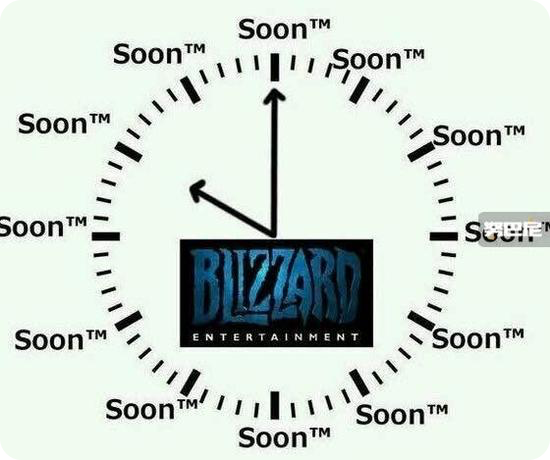
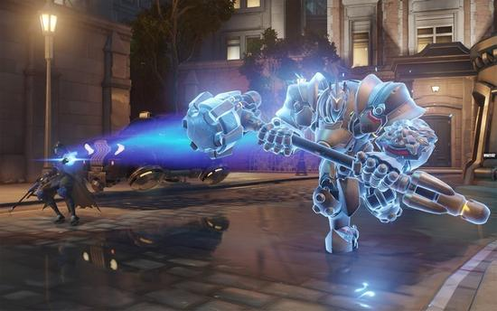

快速匹配机制
关于匹配系统，守望先锋总监Jeff Kaplan曾经在守望先锋的官方论坛上对玩家的问题做了一些回答，
介绍了匹配机制的几个最关键 的因素以及重要的设计理念，其中最关键的有几个要素：时间，网络延迟，组队，匹配等级。
下面我们一个个来看下它们是如何影响游戏的匹配的。
一、时间因素
匹配系统的第一个要素：尽可能快的匹配到对局，从而使得你不需要等待太久。
这是匹配系统优先级最高的规则之一。
暴雪认为整个匹配系统的关键就是时间。
当等待时间超过某个阈值时，玩家们便会开始抱怨匹配花费的时间太久了，匹配等太久会让玩家的体验变得非常差。所以时间因素是第一个要素。
所以在匹配对手的质量跟时间的权衡上，暴雪给予匹配时间更高的优先级。
而快速的匹配速度+快速的游戏时间，让守望先锋享受一场战斗变得非常容易。
有的玩家因此会担心，会不会因此降低了匹配的质量？
事实上以现在守望先锋的玩家规模来说，并不需要担心这个问题。因为玩家数量足够多的情况下，系统就有足够多的选择，可以在时间阀值内找到最优的匹配。
.
二、网络延迟（ping）
匹配系统的第二个要素：尽量相同网络延迟，也就是我们常说的ping值。
对于射击游戏来说，网络延迟太高也带来严重的负面体验。守望先锋没有分区分服，为整个世界的玩家们进行匹配。
所以设计师希望玩家匹配到最近的服务器以尽量降低网络延迟。
但是依然还是有玩家住在很有挑战性的区域，而网络本身的确也会有点状况。
所以这个匹配要素做不到对每个人都很完美。但是大部分的玩家的连接状态应该都是不错的。
如果两个人ping值差异太大的人组队，会给匹配系统带来不稳定性，这是游戏无法解决的问题，但是游戏允许ping值差异大的玩家组队。
.
三、匹配等级
守望先锋会对所有的数据做一个标准化，
然后根据你的表现跟标准进行对比来确定你的MMR。
这一点可以理解为高考分数的切线一样，其实是跟所有人的数据来做排名对比来确定你的等级。
要注意：上面列出来的几个因素只是很小的一个部分。
而设计师特别强调的是：胜率跟MMR是没有关系的。
胜率不影响MMR，跟匹配也没有任何关系。但是通常来说，高手胜率都会比较高。
守望先锋并没有刻意控制玩家的胜率趋于一个固定的数值。
尽管实际上很多人都处于50%胜率，暴雪对此非常满意，因为这是一个匹配机制成功的关键指标。